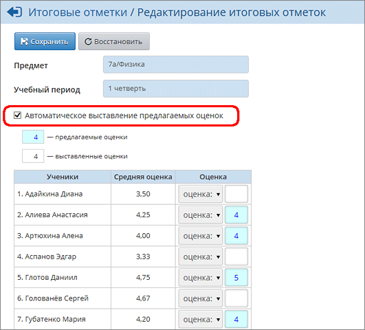

Итоговые отметки выставляются в свободном поле справа. Для сохранения оценок нажмите кнопку Сохранить.
Если в классном журнале были выставлены текущие отметки, то при выставлении итоговой отметки удобно пользоваться средним баллом за период, который подсчитывается автоматически. Для этого отметьте галочку "Автоматическое выставление предлагаемых оценок":
 |
Внимание! Эти предлагаемые отметки ещё не сохранены в базу данных системы, для их сохранения нужно явно нажать кнопку Сохранить. Преподаватель может свободно изменить предлагаемую отметку и, вообще говоря, выставить любую отметку.
Средневзвешенные оценки
В качестве предлагаемой итоговой отметки за четверть может выступать не только среднее арифметическое текущих отметок. Каждое задание может иметь свой собственный вес (контрольная, самостоятельная работа, ответ на уроке, проверка тетрадей будут, очевидно, иметь разный "вес"), что позволяет рассчитывать средневзвешенную оценку и, тем самым, более объективно оценивать успеваемость учащихся. Как настроить вычисление средневзвешенных оценок?
Как выставить оценки по системе "зачёт-незачёт"?
Чтобы по данному предмету в данном классе была возможность выставить "зачёт" и "незачёт", нужно предварительно настроить систему оценивания на экране Обучение->Предметы. Подробнее о системе "зачёт-незачёт"...
Как выставить "не оценивается" в 1-м и 2-м классах?
Аналогично, нужно предварительно настроить систему оценивания на экране Обучение->Предметы. Подробнее о системе "не оценивается"...
Как правильно учитывать учащихся, неаттестованных по различным причинам?
Если ученик неаттестован по неуважительной причине, то в выпадающем списке следует выбрать "н/а". Следует учитывать, что если у ученика есть "н/а" хотя бы одному предмету, то в группу отличников, ударников и т.п. (см. "Отчет классного руководителя за учебный период") он не попадает.
Если ученик неаттестован по уважительной причине (освобождение по болезни, невозможность посещать занятия), в выпадающем списке следует выбрать "осв.".
Внимание! Как правило, отметка "н/а" ставится тем учащимся, которые неаттестованы по НЕуважительной причине хотя бы по одному предмету; отметка "осв." - тем, которые неаттестованы по всем предметам по уважительной причине (болезнь и т.п.).
Как происходит округление среднего балла до целого числа?
Если указан режим "Автоматическое выставление предлагаемых оценок", то в качестве итоговой оценки будет предложен средний (средневзвешенный) балл, округлённый по следующим правилам (пример для 5-балльной шкалы):
| если 2.7<=ср.балл<=3.3 , то предлагается итоговая отметка 3,
|
| если 3.7<=ср.балл<=4.3 , то предлагается итоговая отметка 4,
|
| если 4.7<=ср.балл, то предлагается итоговая отметка 5.
|
Итоговая отметка не предлагается, если средний (средневзвешенный) балл отстоит больше чем на 0.3 от целого числа.
Пример для 12-балльной шкалы оценок:
| если 1.7<=ср.балл<=2.3 , то предлагается итоговая отметка 2,
|
| если 2.7<=ср.балл<=3.3 , то предлагается итоговая отметка 3,
|
| если 3.7<=ср.балл<=4.3 , то предлагается итоговая отметка 4,
|
| ...
|
| если 9.7<=ср.балл<=10.3 , то предлагается итоговая отметка 10,
|
| если 10.7<=ср.балл<=11.3 , то предлагается итоговая отметка 11,
|
| если 11.7<=ср.балл, то предлагается итоговая отметка 12.
|
Выставление итоговых отметок в случае деления предмета на подгруппы
В системе "Сетевой Город" учащиеся могут свободно переводиться из подгруппы в подгруппу, однако действует правило: для ученика по одному предмету в одном классе может быть только одна итоговая отметка.
Следствия:
| 1) нельзя выставить итоговую отметку в одной подгруппе, если итоговая отметка уже есть в другой подгруппе;
|
| 2) выставить итоговую отметку можно только в той подгруппе, в которую зачислен ученик. Выставленная итоговая отметка в другой подгруппе (до перевода) отображается в режиме "только для чтения".
|
В главном экране классного журнала (графа "Отметка за период"), а также в отчёте "Распечатка классного журнала" (каждый столбец итоговых отметок) - выводятся только те итоговые отметки, которые были выставлены в выбранной подгруппе (т.е. в подгруппе, выбранной в фильтре "Предмет" на этом экране).
Выставление итоговых отметок выше 5 баллов
Для того, чтобы выставить итоговую отметку выше 5 баллов, необходимо отредактировать параметр Максимальная отметка на экране Управление -> Настройки школы.